Steward
分享是一種喜悅、更是一種幸福
掌機 - TRIMUI - 終極改造
參考資訊：
https://www.thingiverse.com/search?q=trimui&type=things&sort=relevant
原本TRIMUI厚度是9.8mm，這個厚度相當薄，玩格鬥遊戲比較不適合，於是，司徒上Thingiverse找尋是否有相關STL素材
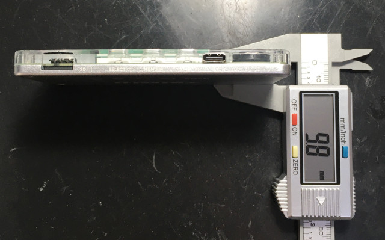
發現Liartes製作了三個相關素材，十字鍵改造、保護殼、電池後蓋
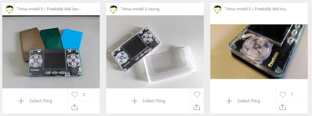
十字鍵支撐點變高
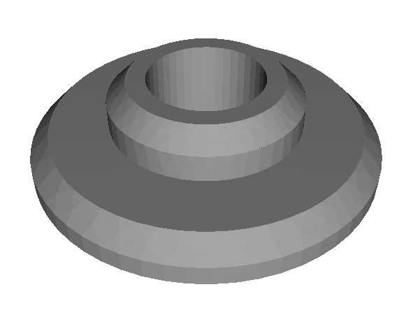
司徒使用0.12mm厚度列印，感覺還可以接受
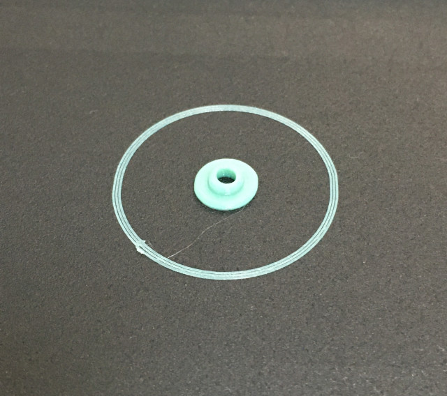
安裝
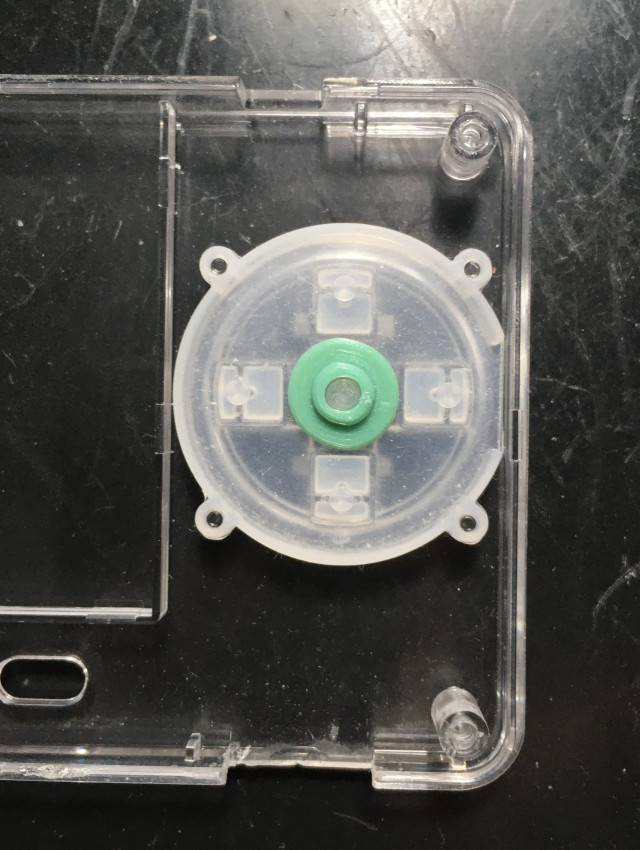
相當吻合
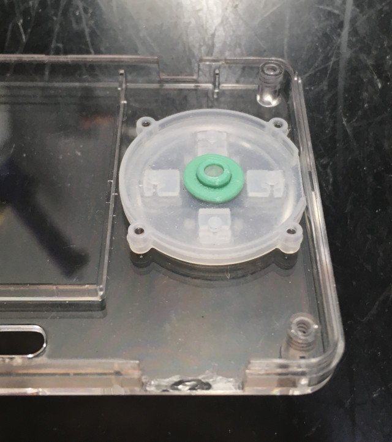
正面看的形狀
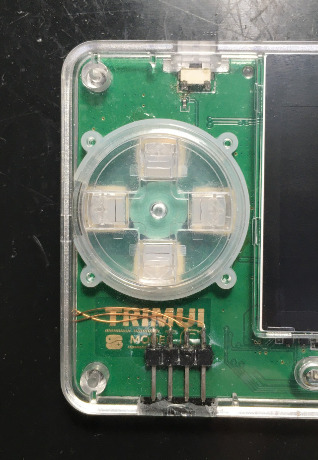
十字鍵被墊高了，不再是軟綿綿的按鍵
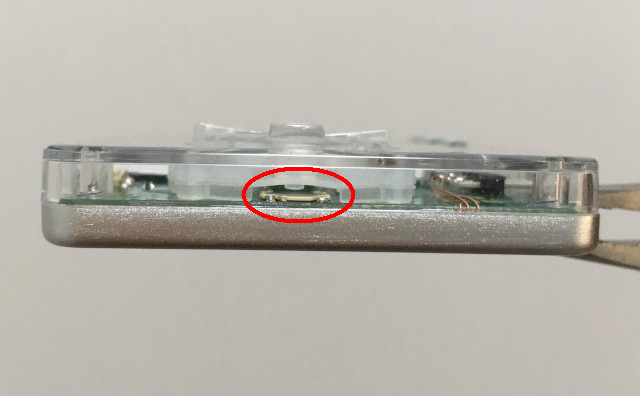
司徒是無法接受落塵的現象，因此，司徒把前蓋的屏幕部份，手動裁切掉
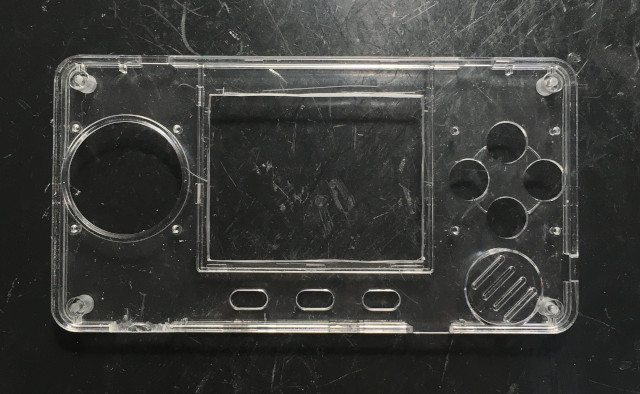
裁切後不夠美觀，於是，司徒畫了一個修飾的架子
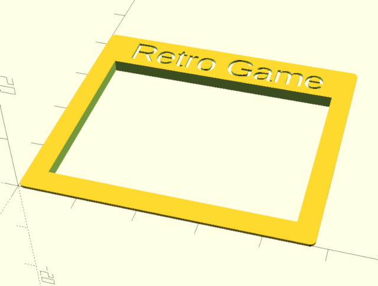
司徒畫的很薄，避免影響觸感
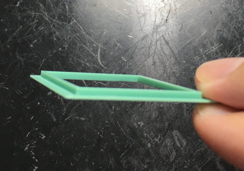
裝飾上，感覺還不錯
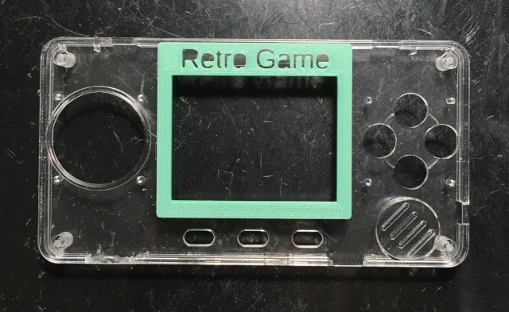
電池後蓋，這是原作者的素材，淘寶店家說電池接觸的地方太薄，無法製作
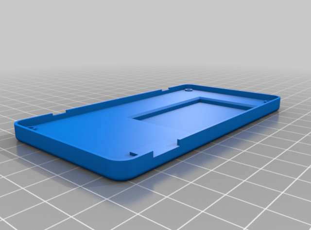
於是，司徒使用OpenSCAD改造一下，載入原本STL
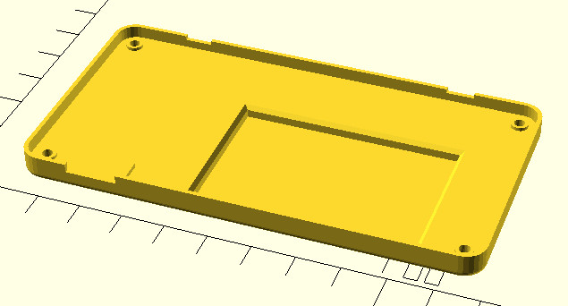
填補
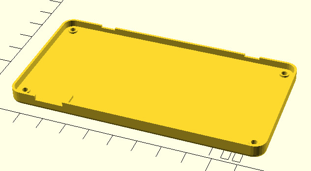
司徒挖出更多空間，厚度都符合店家規定，可惜，淘寶店家最後還是無法製作
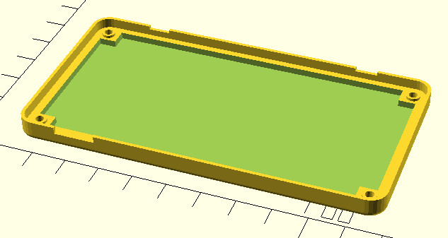
最後，司徒使用自己的3D列印機打印，厚度設定0.12mm，列印出來的質感還可以接受
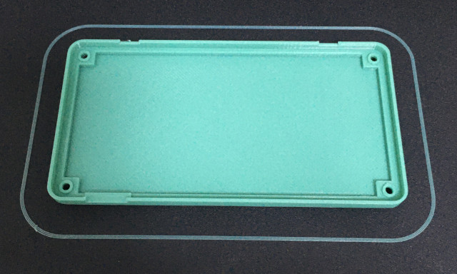
接著改造電池，這是原本司徒改的600mA電池
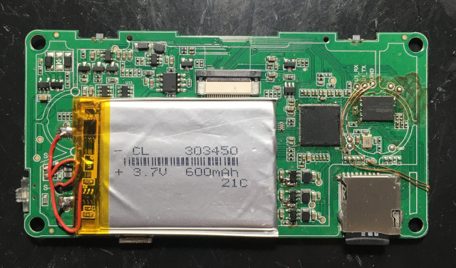
原作者推薦的1000mA電池
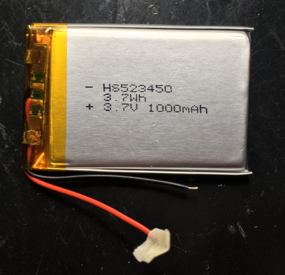
F1C200S如果有改造超頻，請不要把電池放在F1C200S上面，避免爆炸
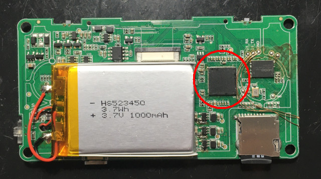
厚度
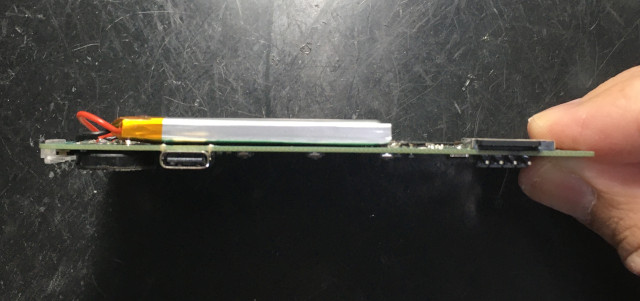
司徒覺得還不錯的列印精度
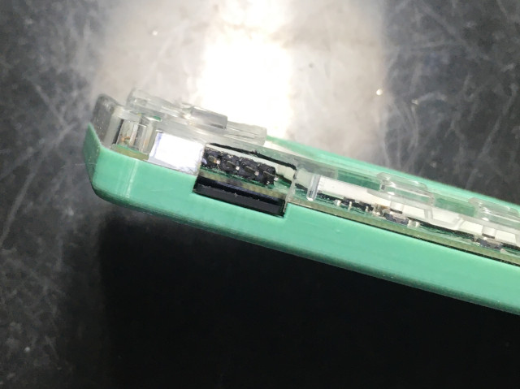
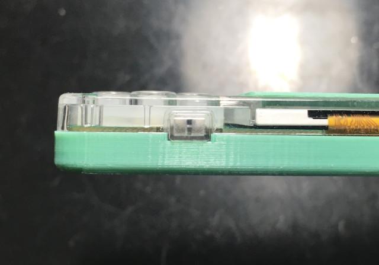
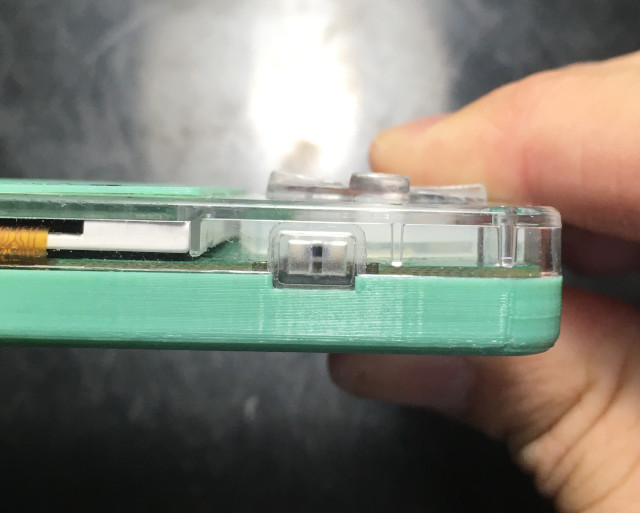
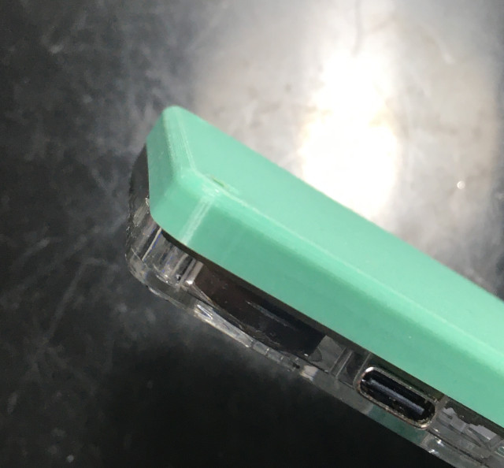
這樣的厚度最適合使用大姆指搓招
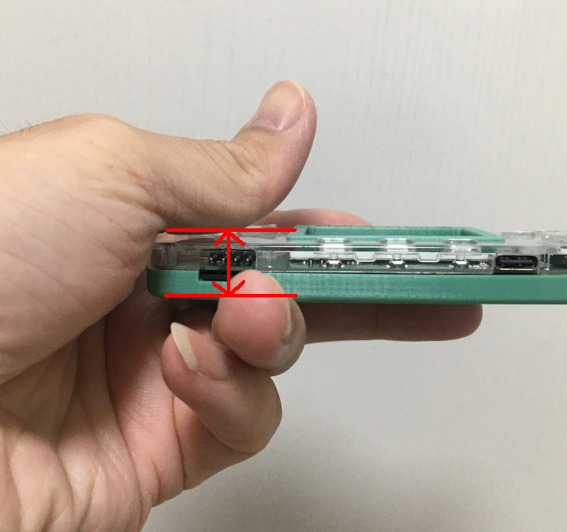
改造後的厚度是11.8mm
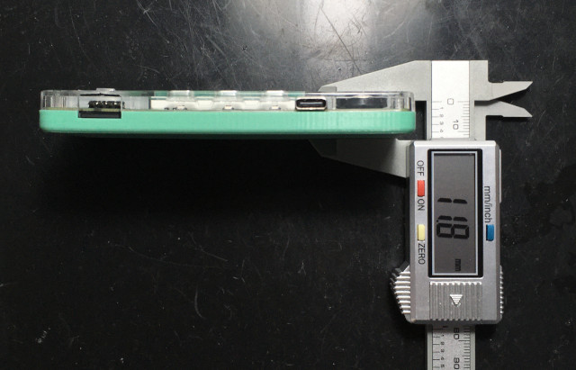
重量68g
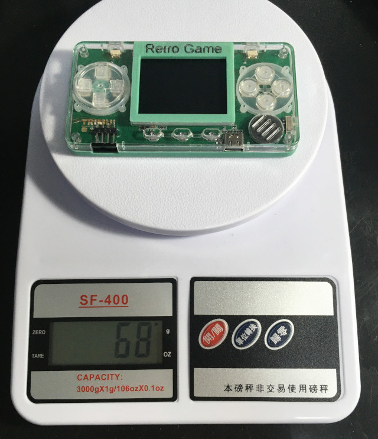
永遠的KOF
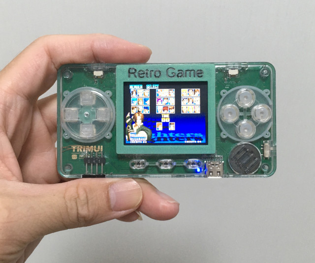